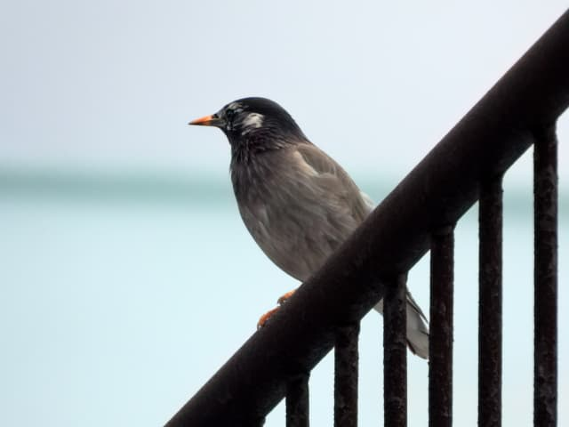
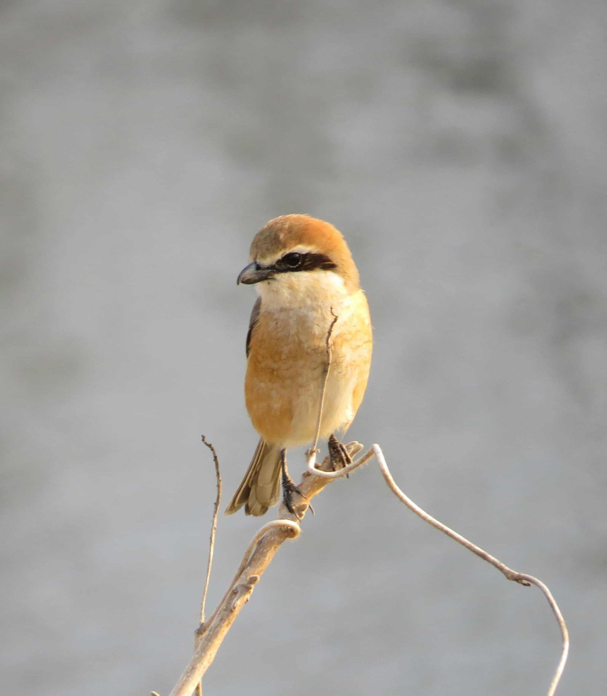
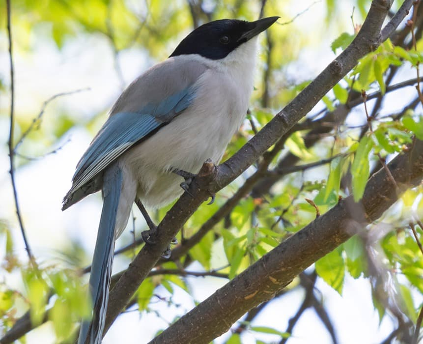

すぐそこに。 いつもの景色が、ちょっと愛おしくなる。

やあ、よく来たね！案内人のすずめんだよ！
野鳥観察って難しそう？
ノンノン、高い双眼鏡も専門知識もいらないよ！
僕が、毎日の景色をもっと楽しくするヒントを教えるよ！
ABOUT
「とりみっけ。」へようこそ。
このサイトは、都心のいつもの景色の中で出会える、身近な小鳥たちのやさしい観察ガイドです。
スマホから少しだけ目線を上げて、すぐそばにいる小さな隣人たちの愛らしい姿に、そっと癒されてみませんか？
難しい機材なんていらないよ！鳥を見たい気持ちと、ちょっとした知識があれば十分！
身近な鳥紹介！
 スズメ
スズメ
スズメ
両足を揃えて「ぴょんぴょん」跳ねて移動するよ！砂の上で体をすりすりする「砂浴び」で羽のお手入れをするんだ。実は人間の近くにしか巣を作らない、人好きな鳥なんだ
 カラス
カラス
カラス
首をかしげて君をじっと見つめているかも？怖がられがちだけど、滑り台で遊ぶほど頭が良くてお茶目！覚えた人間の顔を識別して記憶できる、賢い知能の持ち主なんだよ。
 ヒヨドリ
ヒヨドリ
ヒヨドリ
「ヒーヨ！」と鳴く、ボサボサ頭がトレードマーク！甘い蜜や果実が大好物で、夢中で食べすぎて顔が花粉で真っ黄色になることも。実は世界的に日本周辺でしか見られない貴重な鳥だよ！

ムクドリムクドリ
芝生を忙しく歩き回り、地面をツンツン突っついて虫を探すよ。オレンジ色の足とクチバシがチャームポイント！虫をたくさん食べて農家さんを助ける、頼もしいヒーローなんだ。
 セキレイ
セキレイ
セキレイ
「チチチッ」と鳴きながら早歩きして、尾羽をパタパタ上下に振るよ！人の前を「逃げては止まる」様子や可愛らしい動作から、昔は神様に大事な知恵を教えた鳥と言われていたんだ。
 ハト
ハト
ハト
首を振って歩くように見えて、実は「頭を空間に一瞬静止」させて景色をブレずに見ているんだ！親の体内で作る特製ミルクで雛を育てる、珍しいパパママでもあるよ。
 カモ
カモ
カモ
水の上では優雅にプカプカ浮かんでいるけれど、実は水面下で足を必死にバタバタ動かしているのが可愛い！水面にぽこっとお尻を向けてご飯を探す後ろ姿も、とっても愛くるしいよ
見れたらちょっとラッキーな鳥たち！
 サギ
サギ
サギ
川辺に真っ白な姿でたたずむよ。水中で足を震わせて魚を驚かせる「ダンス攻撃」が得意技！ツルなどと違って、飛ぶときは首を「S字」に折りたたむのがぼくらの秘密だよ。
 トビ
トビ
トビ
「ピーヒョロロ…」と聞こえたら空を見上げて！上昇気流に乗って羽ばたかずに旋回する「空飛ぶ省エネ名人」なんだ。視力が人の8倍以上あり、上空から獲物を探せるよ！

モズモズ
小さくて可愛いけれど、秋には「キィーキィー！」と高く叫ぶよ！可愛い見た目に反して、捕まえた獲物を枝に刺す「はやにえ」の習性とカギ状のクチバシを持つ、小さなハンターなんだ！

オナガオナガ
「ゲーイ」とハスキーな声で仲間と飛んでいくよ！水色の長い尾羽と黒いベレー帽風の頭がおしゃれでしょ？実は西日本にはおらず、東日本でしか出会えない特別な鳥なんだ！